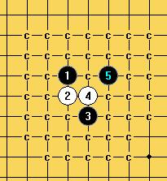
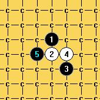
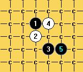
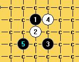
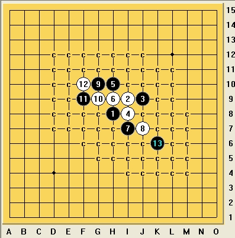

请问斜月一打两打 溪月 峡月一打是否终结
#1 请问斜月一打两打 溪月 峡月一打是否终结 作者：剑魔令狐冲 发表时间：2009-2-16 18:44:17
小朋友我 感觉 斜月1打两打 溪月 峡月一打 都是黑胜 但是不知道 如何终结 哥哥姐姐门知道如何终结就 教教我啊 发个地毯谱让我看下 感激不尽#2 Re:请问斜月一打两打 溪月 峡月一打是否终结 作者：wd1988 发表时间：2009-2-16 19:41:39
目前各棋手研究处于保密状态。但是据我所知，斜月一打目前并没有必胜，但是黑有绝对的优势，早晚要终结。二打目前还没有必胜的手段，但是也是黑优，黑棋绝对控场。但是“地毯必胜”是一个很严肃的词语，不能滥用。所以目前斜月一打二打没有“地毯必胜”。如有人现在打出了真正的斜月一打二打必胜谱，本人愿意花人民币--五千元--购买，以资助五子棋研究事业。
溪月峡月目前已经都已经做到了二打地毯。溪月峡月两局基本相通，可以说一荣俱荣，是已经做到了二打地毯的。




#3 Re:请问斜月一打两打 溪月 峡月一打是否终结 作者：江南新绿 发表时间：2009-2-16 21:03:59
楼上表个c没有什么说服力吧。白白浪费几个图片。
#4 Re:请问斜月一打两打 溪月 峡月一打是否终结 作者：火光冲天 发表时间：2009-2-16 22:27:53
=======上图对应的爱五子棋谱代码如下，以便你拆解：========
h8i9g7h9j9i10i8g8j11h7f9j8g11f10i12h13k11
======================================================
今天有人说这个17手必胜，大家分析下。
#5 Re:请问斜月一打两打 溪月 峡月一打是否终结 作者：剑魔令狐冲 发表时间：2009-2-16 22:41:41
发图的那个哥哥 峡月和溪月的 棋谱发来学习下啊#6 Re:请问斜月一打两打 溪月 峡月一打是否终结 作者：江南新绿 发表时间：2009-2-16 23:06:03
论坛里面能够找到的溪月资料如下。其实你可以根据关键字搜索本论坛。
#7 Re:请问斜月一打两打 溪月 峡月一打是否终结 作者：wd1988 发表时间：2009-2-19 14:16:39
楼上，我发图的说服力就是：你要是和我下这个局，走c必败。你要是觉得我的c是我自己无聊点上去的，那也只能随你。要谱直说，不要谱就不要藐视别人的棋谱。你连个c图都没发呢#8 Re:请问斜月一打两打 溪月 峡月一打是否终结 作者：岳麓小棋后 发表时间：2009-2-19 14:26:27
两位在我看来就像西毒和北丐那样，高手间的调侃，
#9 Re:请问斜月一打两打 溪月 峡月一打是否终结 作者：wd1988 发表时间：2009-2-19 17:21:55
我只说一句话，就是溪月峡月二打已经必了。斜月一打二打三打都没必#10 Re:请问斜月一打两打 溪月 峡月一打是否终结 作者：行云流水 发表时间：2009-2-19 17:41:59
要谱直说，不要谱就不要藐视别人的棋谱。你连个c图都没发呢
7楼的说话之前要考虑清楚先。人家或许没有拿出你所谓的图，不过你自己在这个论坛里面看看的话，应该可以看到人家早就有一个关于介绍溪峡月变化WORD版了。
#11 Re:请问斜月一打两打 溪月 峡月一打是否终结 作者：wd1988 发表时间：2009-2-19 19:19:13
那又怎么样？他说那话就是藐视我。他写了文章可以跟贴地址，但没必要诋毁别人。诋毁了别人还不准别人有意见了？笑话！
#12 Re:请问斜月一打两打 溪月 峡月一打是否终结 作者：lijeki 发表时间：2009-2-19 20:15:59
要谱直说？说的好像真的那样.楼主不是要地毯谱吗，你怎么不给他#13 Re:请问斜月一打两打 溪月 峡月一打是否终结 作者：行云流水 发表时间：2009-2-20 0:44:33
楼上表个c没有什么说服力吧。白白浪费几个图片。
3楼的这句话我反复看了很多遍，作为正常人的正常语文理解能力看，看不出任何的藐视。不知道11楼什么意思。
难道说3楼讲没有什么说服力不对吗？我觉得没有什么错呀。你可以认为你发的图就是你有的终结谱，但对于需要了解的人来说，仅仅一个满是C的图又能说明什么？！
另外，我个人说一句。溪峡月二打的必胜地毯在某个层面来讲，早就不是什么很稀罕的东西。
#14 Re:请问斜月一打两打 溪月 峡月一打是否终结 作者：yoda 发表时间：2009-2-20 9:04:15
二楼发的前3个图是地毯了，我05年验证过。第4个图有些繁琐那时没拆完。溪峡月二打的必胜地毯有的人的确不少，我看到过的就有三四个版本。有人给出负责任的终结图是好事情，给出结论大家去验证也是好事情。没事画C的人那是少数，二楼不必在意。呵呵
［ 有志青年 于 2009-2-20 21:49:26 时奖励此帖[金币加 20 威望加1］
#15 Re:请问斜月一打两打 溪月 峡月一打是否终结 作者：下棋思思 发表时间：2009-2-20 13:47:01
百家争鸣，美哉！
#16 Re:Re:请问斜月一打两打 溪月 峡月一打是否终结 作者：闫荣辉 发表时间：2009-2-20 20:14:29
引用：嗯，说得多好啊！不必太大的火气，伤身体！
原文由 yoda 发表于 2009-2-20 9:04:15 :二楼发的前3个图是地毯了，我05年验证过。第4个图有些繁琐那时没拆完。溪峡月二打的必胜地毯有的人的确不少，我看到过的就有三四个版本。有人给出负责任的终结图是好事情，给出结论大家去验证也是好事情。没事画C的人那是少数，二楼不必在意。呵呵
#17 Re:请问斜月一打两打 溪月 峡月一打是否终结 作者：wd1988 发表时间：2009-3-6 12:13:44
你们既然怀疑我，那就没办法了。多少大师在这里攻击我，其实大师自己也没有放出地毯谱。我现在就把溪峡地毯谱发到交流区，请去查看！
#18 Re:请问斜月一打两打 溪月 峡月一打是否终结 作者：越狱行辕 发表时间：2009-3-6 12:37:29
哈哈我去找找哈#19 Re:请问斜月一打两打 溪月 峡月一打是否终结 作者：越狱行辕 发表时间：2009-3-6 12:41:33
 没有啊
没有啊
#20 Re:请问斜月一打两打 溪月 峡月一打是否终结 作者：wd1988 发表时间：2009-3-6 13:28:38
正在制作！马上能够完成！#21 Re:请问斜月一打两打 溪月 峡月一打是否终结 作者：wd1988 发表时间：2009-3-7 15:23:19
溪峡月已经完成！我说到做到！#22 Re:请问斜月一打两打 溪月 峡月一打是否终结 作者：刀魂 发表时间：2009-3-7 22:13:45
网站里面 好像 又终结谱 自己找找看#23 Re:请问斜月一打两打 溪月 峡月一打是否终结 作者：冷面孤煞 发表时间：2009-3-11 16:20:23
斜月一打，有人终结了吗？#24 Re:请问斜月一打两打 溪月 峡月一打是否终结 作者：笑雨辰 发表时间：2009-9-13 5:40:30
。。好大的谱
#25 Re:Re:请问斜月一打两打 溪月 峡月一打是否终结 作者：黄药师 发表时间：2009-9-13 8:00:12
引用：
原文由 岳麓小棋后 发表于 2009-2-19 14:26:27 :
两位在我看来就像西毒和北丐那样，高手间的调侃，
俺东邪来凑个热闹！
围观～
#26 Re:请问斜月一打两打 溪月 峡月一打是否终结 作者：流逝 发表时间：2009-9-14 6:47:48
 溪峡地毯应该人手一份了才对嘛。
溪峡地毯应该人手一份了才对嘛。
斜二不太可能证明出地毯胜，嘻嘻哈哈老师可以留着那5000元去买两套好衣服了
#27 Re:请问斜月一打两打 溪月 峡月一打是否终结 作者：笑雨辰 发表时间：2009-9-14 8:30:27
LS把你的明星2打地毯发出来让大家人手一份嘛#28 Re:请问斜月一打两打 溪月 峡月一打是否终结 作者：刀魂 发表时间：2009-9-14 9:40:15
我明确的告诉 嘻嘻哈哈，同志，溪月 无法真正的地毯，你的第四图，相当的麻烦（其中zjz扫的点有2个c是漏洞，建议你自己做地毯的时候，好好的验证一
下）。。。（有3路相当的猥琐）
#29 Re:Re:请问斜月一打两打 溪月 峡月一打是否终结 作者：wd1988 发表时间：2009-9-14 18:24:00
发出来看看撒，你不上图，我哪知道你说的哪个。至于你说的漏洞。。。如果是指06的漏洞，你倒是可以不用管了
以下是我刚刚打的第四图分支，你可以看看哪里错了，指出来，我会很感激你的。
 溪月分支.rar
溪月分支.rar
#30 Re:Re:请问斜月一打两打 溪月 峡月一打是否终结 作者：雾都少帅 发表时间：2009-9-18 12:44:06
引用：
原文由 wd1988 发表于 2009-3-7 15:23:19 :
溪峡月已经完成！我说到做到！
是吗
=======上图对应的爱五子棋谱代码如下，以便你拆解：========
h8i9j9i8h10h9i7j7g10g9f9f10k6
======================================================这个14后边终结起来烦琐 那位老师能发下
参考谱
溪月参考图.rar
#31 Re:Re:Re:请问斜月一打两打 溪月 峡月一打是否终结 作者：逆刃 发表时间：2009-9-18 13:01:13

要记得送花。
［ 雾都少帅 于 2009-9-18 13:26:00 时花20金币送鲜花一朵］